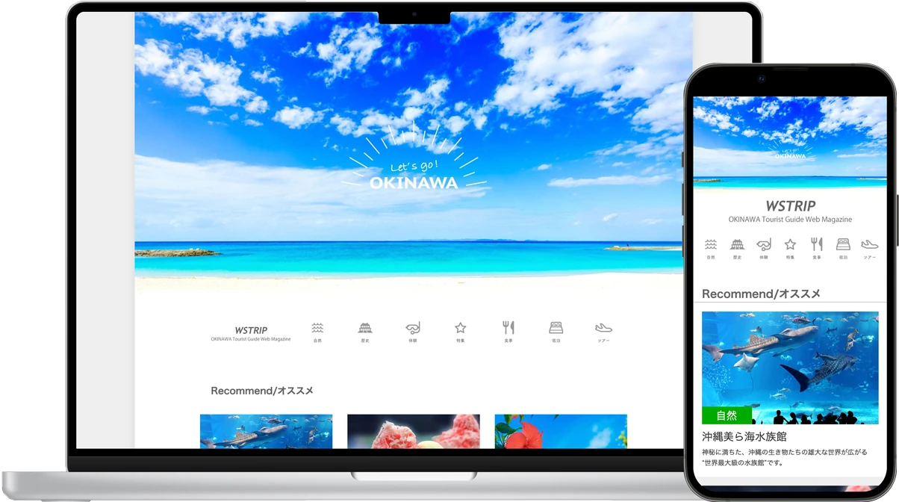
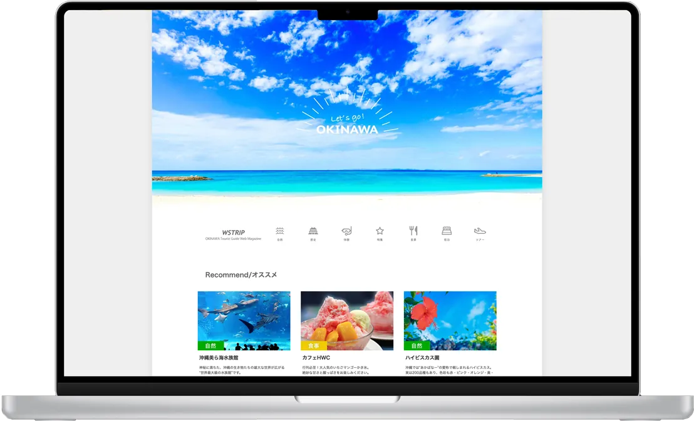
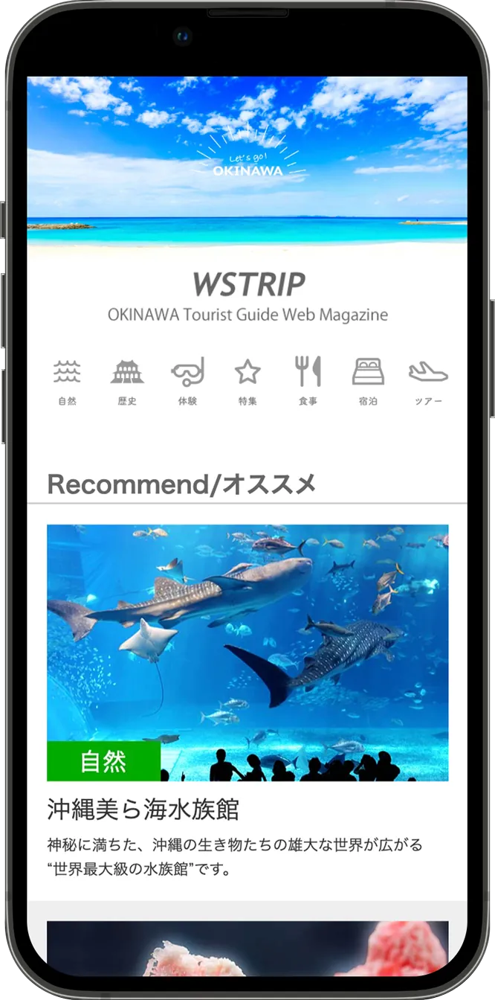
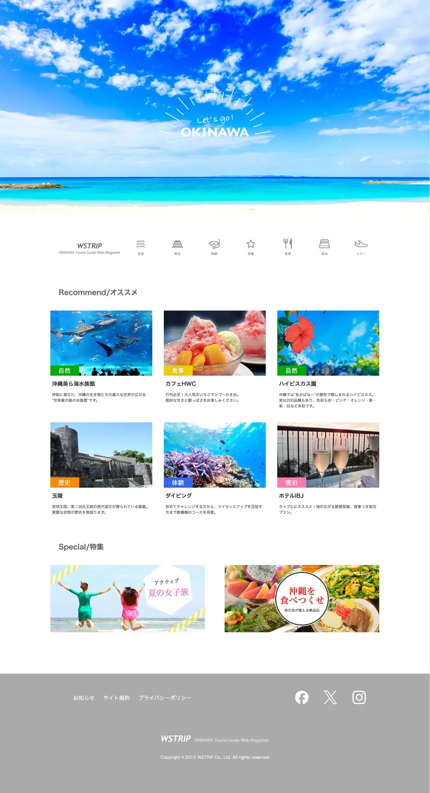
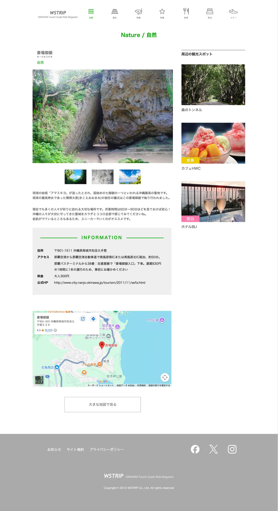
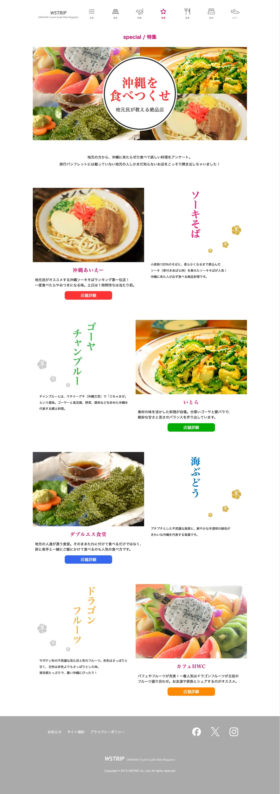

DesignWebサイト TOP
ファーストビューには沖縄の空と海の写真を大きく使い、手書き風の「Let's go! OKINAWA」で旅の高揚感を演出しています。
- ホバーエフェクトの実装により、グローバルナビゲーションの視認性とインタラクティブ性を向上
- オススメ記事は写真・カテゴリタグ・タイトル・説明文をセットにしたカードで統一
- 特集はバナーで見せ、記事一覧とは違う「読みもの」への入口を作る
- PCは3列、SPは1列に組み替え、スマホでも写真を大きく見せる
沖縄への観光客を増やすことを目的とした、地域情報サイト「WSTRIP」の制作課題です。見本デザインをもとにトップページと下層２ページ（自然、特集）の、画像制作およびHTML・CSSによる実装までを担当しました。

青い空と海で、
「沖縄に行きたい」を後押しする。
主役は写真の空と海の青です。文字やフッターはグレーで抑え、7つのカテゴリ（自然・食事・歴史・体験・宿泊）に、グリーン・オレンジ・ブルー・バーガンディー・イエロー・ピンク・パープルを割り当てて、記事の種類がひと目で分かるようにしています。


ファーストビューには沖縄の空と海の写真を大きく使い、手書き風の「Let's go! OKINAWA」で旅の高揚感を演出しています。
トップページと下層ページ2つの、計3ページを制作しました。ヘッダーとフッターは共通にしつつ、下層ページはそれぞれの内容に合わせてレイアウトを変えています。枠の中はスクロールしてページ全体を見られます。

空と海の写真で旅の気分を高め、オススメ記事6件と特集バナー2件へ案内します。カテゴリごとにタグの色を変え、記事の種類を見分けやすくしました。

メイン写真とサムネイル、紹介文、INFORMATION、地図の順に、行く前に知りたい情報をまとめました。右側には「周辺の観光スポット」を置き、次の記事へ回遊できるようにしています。

料理の写真と縦書きの料理名を左右交互に配置し、雑誌をめくるようなリズムを作りました。料理ごとに見出しとボタンの色を変え、花のあしらいで沖縄らしさを添えています。
サイトの構造や仕組みを学ぶために、AIに頼らず、すべて手作業でコーディングしました。課題の仕様書に沿って、HTMLとCSSで実装しています。
学習を目的に、あえてシンプルな構成にしました。最初の階層にトップページ・自然・特集の3つのHTMLファイルを置き、CSSはcssフォルダ、画像はimagesフォルダにまとめています。制作当時はディレクトリのルールを十分に理解していなかったため、ファイル名はindex.htmlではなく、okinawa.htmlのようにページごとの名前になっています。
okinawa/ ├─ okinawa.html … トップページ ├─ okinawa_shizen.html … 自然 ├─ okinawa_special.html … 特集 ├─ css/ │ ├─ common.css │ ├─ common_2.css │ ├─ responseve_640_979.css │ ├─ responseve_max639.css │ └─ style.css └─ images/
※ファイル名をクリックすると、GitHubでコードを確認できます。
今回はAIに頼らず、仕様書のルールを守りながら、画像制作からHTML・CSSによる実装までを一人で行いました。タグの書き方やインデント、コメントの入れ方など、あとから読み返しても分かりやすいコードを書くことを意識しました。
AIを使わず全てを自分の手で行うことで、サイトの基本構造や仕組み、各要素の役割についてより深く学ぶことができました。一方で、ディレクトリのルールなど、まだ理解が足りない部分にも気づくことができました。今後はコーディングしやすいデザインとは何かを考えながら、デザインと実装をつなげられるデザイナーとして、制作の幅を広げていきたいと考えています。